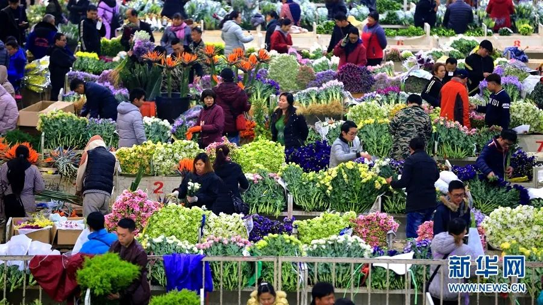
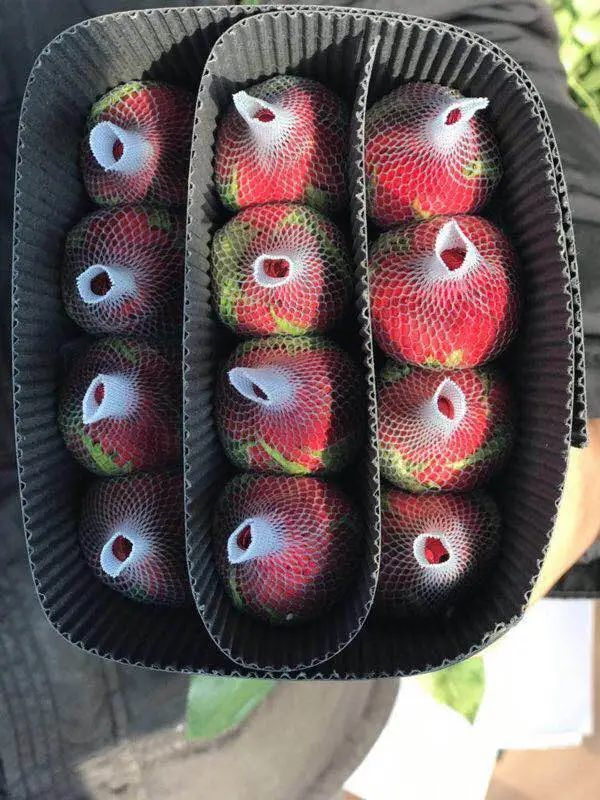
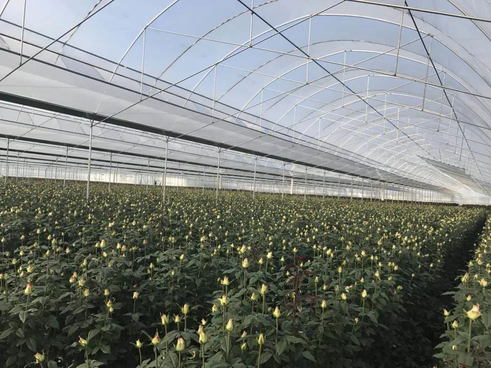

被销毁的100万支玫瑰
原文链接 备份链接 以下文章来源于市界 ，作者有趣有料的 灾难具有两面性。在惋惜花农遭受重大损失的同时，也侧面反映出来以云南花卉行业为代表的中国鲜花行业的问题。 文 | 李曙光 齐敏倩 编辑 | 廖影 “找我买花吧，一扎玫瑰20枝才二十 …

摘要：31岁的李戈从事花卉行业12年，他在云南楚雄承包了500亩玫瑰花田，有200亩都在为“2·14”情人节做准备，从去年10月忙到了今年初。疫情来临，原本期待的收获季变成他从业以来最困难的时节。
文｜汪婷婷
编辑｜陶若谷
2020年本该是花农李戈的“丰年”。
年初，云南宜良、陆良、昭通等鲜花种植地下了场大雪，压垮许多花棚，毁了几十万枝当地花农为“2·14”准备的玫瑰花。这反而成了李戈的机遇，市场上的花少了，他手里的花更值钱了。
他承包的500亩玫瑰花田在楚雄，逃过了年初的雪灾。他估计今年“2·14”的玫瑰花至少能和去年一样，涨到一支3块钱的高价，为了这天，他从去年10月底就开始在花田做准备。
昆明国际花卉拍卖交易中心（简称“花拍中心”）也在官微上打出广告，称今年的“2·14”是“史上最具潜力的情人节”——只要开市，花价一定上涨，甚至有可能刷新过往的纪录。
最终，“2·14”那天李戈一枝花也没卖。过完年，快递陆续停运，各地花市都封了，花运不出去烂在地里。为这天忙活了3个月，投入的580万元成本都赔了。物流继续停，他还在继续亏。他一支接一支地点烟：“事情都成这样了，走一步看一步吧。”
以下为李戈的口述：
泡汤的情人节
我从去年10月底就在为情人节做准备，500亩的玫瑰花田，有200亩都是为“2·14”种的。
冬天玫瑰花的生长周期特别长，要100多天才成熟一次，所以我（去年）10月底就给花切枝，让花重新发芽，每天施肥、浇水、拔草，保证情人节能有足够多、足够新鲜的玫瑰。
鲜花寿命很短，采收期3天左右，这3天没把花摘下来送到客户手里，往后再采也没用了，因为花到不了客户手里就谢了。
我的客户主要是北京、上海、天津、南京等大城市的花卉批发商。一年到头卖得好的也就是“2·14”、七夕、国庆节、圣诞节……有时（市场上）花太多，或者节日气氛没那么浓，也不好卖。生意最好的时候就是情人节，一定好卖，花价一定涨。
情人节又经常在春节附近。大家过年休息的时候，都是我们最忙的时候。我这两天有空跟你聊聊，也是因为遇到疫情了。
花市上都是按扎卖花，一扎20枝。每一扎的价格不固定，今晚一扎可能3块，明晚就30块了，要看市场，浮动大也是常见的。
今年情人节尤其好。“2·14”的订单很多，都是大单，我手上的一个单子就要15万扎花。2月14日是一个周五，一般来说，周五的成交量都会大。加上前段时间云南的花被大雪压垮了一些，（市面上）花也比较少，所以我预估今年一扎至少能卖到去年的价格，甚至更高。
不止是我，所有花农都奔着今年情人节能挣个几十万、上百万。但遇到了疫情，期望全泡汤了。
 李戈花田里开爆（蔫）的玫瑰花。
李戈花田里开爆（蔫）的玫瑰花。
为了控制人流量，大城市的花市都封了，下游商家没生意，我们的订单也少了。各地物流又陆续停运，接到了订单也发不出去。花市上有公开数据，云南光种鲜花的就有170多万亩地，但现在除了“花拍中心”还在销售，其他所有的鲜花交易都瘫痪了。
最后，“2·14”那天的花价差不多是3块钱一扎。作为对比，我告诉你去年是60多块（一扎）。
那天我没卖。我打包鲜花的场地被封，卖包装资材的厂家也停工了，当然，要是想卖，这些都是可以克服的，主要是花装箱打包要把工人召集起来，疫情那么严重，风险太大了。我的工人有四分之三放假了，到现在我也没让回来。
每一天，都有几万枝鲜花开爆（蔫），烂在地里。前期在200亩花田投入的地租、农药化肥、工人工资，大概580万全赔了。工人放假，浇水施肥也不弄了，每天还在亏1.5万元左右。
烂在地里还能少亏一点
我的基地在云南楚雄，市场部在昆明斗南花市。以往，我和工人每天黎明前就起床摘花，6点之前要把鲜花分级、防腐包装后装车。大货车开2个小时到斗南花市，一半由市场部直接打包发走，另一半进入“花拍中心”卖。
斗南花市是亚洲交易量最大的鲜切花市场，占地面积有1万多平，有两个“花拍中心”和一个散花交易市场。日均交易量有1500万到2000万支鲜花，其中，“花拍中心”占60%左右。
把花送到“花拍中心”后，工作人员会根据质量分为ABCD级，排列好装桶，等着买家来拍。两天卖不出去就爆（蔫）了。所以为了保证市场上花的质量，“花拍中心”每天都会销毁滞销的花。
2019年情人节前夕的斗南花市。图源自网络
受疫情影响，散花市场1月下旬就封了。两个“花拍中心”，小的那个也封了，大的闭市了几天，2月10号又重新开市到现在。新闻说那天斗南花市有上百万支鲜花被销毁，这很正常，每天都有花被销毁，只是多与少。虽然我没问过，但我猜10号销毁的就是闭市前送进去的花。
我们花农不用一直守在那里，网上会有数据，今天卖了多少扎，多少钱，谁买走的……第二天就汇款到我银行卡。
17号我送了些花过去，平时有几千买家的“花拍中心”那天只有300多人。这还是我春节后第一次卖花，价钱也不好，3块钱一扎，赔得很。
有客户天天跟我下单、催我发货，像北京有四五个大花市，批发商手里一支花都没有，要跟我拿货。我也尝试过两次，但不顺利。
花田附近的高速路口不知什么时候给封了，司机每次拉货出去都要量体温、登记，问你从哪儿来的，要到哪儿去，每天得更早出门。第一次，花拉到昆明摆了两天，飞机一直停飞，花就废了。第二次又拉到昆明，车都没地方停，花没地方卸，直接原地报销了，几千扎玫瑰啊！
花烂在地里我还能少亏一点钱。硬往外发，如果发不出去亏得更多。
我给你算算，包装一扎花3块，从楚雄到昆明，拉一扎花的成本是4块，地里工人采花的钱也得给。就等于这扎花烂在地里亏10块，往外卖还卖不出去，得亏15块。
看到网上有人说可以做成玫瑰鲜花饼，我也想告诉你们，这就不是同一种东西。做鲜花饼的是食用玫瑰，我们这个是切花月季，培育过程中下农药重，不能食用的。还有人说做成永生花，那又是另一种工艺了，跟我们就不搭尬，要是我做永生花，估计赔得更多。
平时，李戈的玫瑰花都要包装成这样才能往外发货。
拖着，等着
做这个行业12年了，还没遇到过这么难的时候。
我是楚雄人，大山里的孩子，要啥没啥。以前家里穷，成绩也不好早早就辍学了，从做苗木转做花卉生意的时候，我19岁。刚开始主要做新加坡、韩国等亚洲国家的鲜花进出口贸易，后来转向国内鲜花批发。2016年，受电商冲击，批发生意难做，我才想着转向源头。
那时候前景是好的。我积累8年了，有人脉、有经验，所以一下子跟附近的农户租了500亩地，种玫瑰。我的花田里有20多个玫瑰品种，紫罗兰、流星雨、卡罗拉黑玫、戴安娜粉玫、荔枝、海洋之歌……五颜六色，好看得很。
玫瑰苗不算贵，一株种下去能采好几年了。一年可以采四五季，你一边摘，它一边发（芽）。我雇了将近200个工人，每天挨个大棚锄草、打药、浇肥。工钱、农药化肥钱，加上地租，即便每一年投入要有上千万，但感觉还是有得赚的。
今年，我大年初三就到花田扎着了。花田是源头，“2·14”的卖花期会持续10多天，要开始忙了，我得在基地守着。老婆孩子在昆明家里，快1个月了，我还没回去看过。
花卖不出去，心里的压力肯定大。1月底，十几万支花爆在地里一点办法没有，是我最焦虑的时候，每天吃不下睡不好，可是咋整？
手下的员工都是附近村民，五六十岁的大叔大妈，申请过好多次了，想要复工。
都是大山里的人，平时家里就种点田、种点蔬菜、采采野山菌，不务工就相当于没有收入。我花田里有几十个特困户，都是这两年国家给评的，想想也知道（家庭条件）好不到哪儿去。原先在我这里每月能挣两三千块钱，好歹能供孩子上学，养家糊口吧。
我基地附近还有8000多亩花田，都面临同样的问题。我们（花农）都在讨论，下一水（季）的农药化肥怎么弄？工人工资怎么整？然后又要付地租了对吧？
很多农民送田给人种花，都没有人要。
种花的生意要先投入才可能有回报。算下来一亩地大概投入6000多块钱，现在花种出来，采收的时候已经是夏季——淡季，不一定能卖回来（成本）。像这两天，一扎花2、3块钱，一亩地就卖1000来块，种30亩地得亏21万。
只要是做花（生意）的都有影响。最简单的开花店，平时可能就维持一下，赚钱还要靠“2·14”。但今年街上没人，手里的货也出不去，一个石家庄的批发商跟我说，他下游很多花店都在转手。
但是像我的客户，都是批发商，他们前期光冷库投入就有七八十万，不是想退就能退的，只能拖着，拖着又每天都在亏钱。跟我们种花的一样。
也不光是卖花的，种菜种水果的也都损失，物流出不去，作物原地销毁。旁边一个种了600亩草莓的老板说，烂在地里的草莓太多，他看着心疼，昨天刚刚免费送出去两吨。今天他送都没法送，因为包装资材的厂家停工，把草莓装起来的东西都用完了。
现在就是等着，等疫情控制住，生活恢复正常，街道上开始有人消费了，就开门做生意。目前还能维持住小家庭的日常生活和基地运转，接下来还有一个三八妇女节，我还有大概六七万扎花，如果一扎均价能在30元左右，那也还行。
都亏这么多了，我也不知道未来该有什么打算，如果还是没卖出去，那就只能走一步看一步。
李戈的玫瑰花田以前的样子。
后台回复”读者群”, 加入更多讨论

小昼
长按二维码向我转账
受苹果公司新规定影响，微信 iOS 版的赞赏功能被关闭，可通过二维码转账支持公众号。
原文链接 备份链接 以下文章来源于市界 ，作者有趣有料的 灾难具有两面性。在惋惜花农遭受重大损失的同时，也侧面反映出来以云南花卉行业为代表的中国鲜花行业的问题。 文 | 李曙光 齐敏倩 编辑 | 廖影 “找我买花吧，一扎玫瑰20枝才二十 …
原文链接 备份链接 难以确诊的病人：排10小时才能打上针丨武汉肺炎亲历 2020-01-25 21:10 作者：王迎春 来源：中国经营网 本报记者 王迎春 武汉报道 在自己已经走过的生命中，张林（化名）从来没有像现在这样，期望从医院那里， …
原文链接 备份链接 病毒可能长期存在，那疫苗准备好了吗？中国疫苗行业协会数据显示，目前国内共有18个单位在研制新冠病毒疫苗，最快的疫苗将于4月下旬左右申报临床试验。而国外也已至少有6个国家的10余家医药公司宣布正在研发疫苗。 未经授权 禁 …
原文链接 备份链接 _都说钻石公主号上的乘客的经历是“噩梦般的体验”，然而， 困在钻石公主号里漂流多日的Lucy，感受到的却是平安。同样的境地，我们可以怨天尤人，也可心怀感激。感谢梅玫通过好几位朋友联络上Lucy，授权首发她的文。_ 1 …
原文链接 备份链接 新冠疫情爆发以来，武汉市已征用50家医院作为定点医院，很多非新冠病人要么在治疗中被清理出院，要么在疫情期间发病，面临就医困难。 8个月大的陈锦媛，身患罕见先天性心脏病，急需手术，父母驾车千里“突围”，送她到北京，但 …